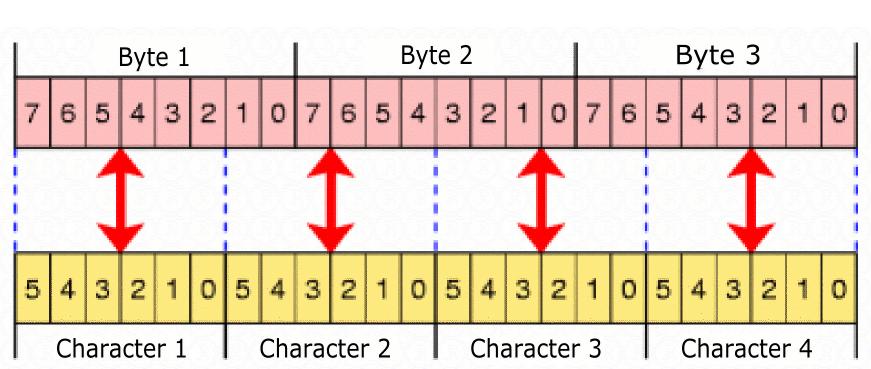

You can reach the functionality regarding Base64 Encode respectively Base64 decode using the menu Individual Procedures \ Tools \ Codes \ Base64 Encode/Decode.
Base64 is primary used for attachments of emails.
Base64 is a coding procedure for representing binary data in a printable char-set.
Base64 is no encryption: No key is used, and every time the plaintext is encoded to base64 code it leads to the same output.
Base64 encodes every 3 bytes binary data (on the basis of the base64 coding table) to 4 byte character data, where all characters are printable, this ends up in a 33% larger file.
The main field is the email standard MIME, in order to receive and send emails with any text or binary data. This is necessary because the used transfer protocol SMTP has some restrictions:
And with this restrictions untreated binary data is not suitable for this, because line breaks appear just randomly. Also the character set of binary data is bigger.
By the base64 encoding all chars are members of a 6-bit ASCII character set. As specified in the RFCs lines of base64 code are never longer than 76 (standard 64) characters. So with this encoding there is no problem any more transferring binary data via the SMTP protocol.
Base64 encoding is mostly used for attachments of emails. For the textual part of emails usually the quoted-printable encoding is used, which at least is partly readable without decoding by humans.
Base64 uses a 24-bit buffer (3-byte) which is divided into 4 parts with 6-bit each.

These 6-bit characters are encoded via the base64 coding-table, which only consists of the characters “0-9”,”a-z”,”A-Z”, “+” and “/”. Transferring 3 bytes of plaintext in 4 bytes base64 code results in 1/3 longer data.
A special functionality is fulfilled by the padding-char”=”. It is used in the case if there is no full 3 byte block at the end, the missing part is filled up with bits of the value zero which then result in the padding-char”=”.
The base64 encoding/decoding implementation in CrypTool is equivalent to the RFCs 1421/2045. It is compatible to a base64 encoding via OpenSSL, except for the handling of illegal characters in base64 encoded text. OpenSSL handles illegal characters like defined in the RFCs and ignores them. The implementation in CrypTool handles illegal characters like defined in a draft of the IETF (a workgroup for internet-standards) and aborts the decoding when an illegal character is found, because illegal characters otherwise could be used for nefarious purposes, e.g., buffer overflow attacks.
Plaintext:
Sven owns a ford focus.
Base64 encoded text:
U3ZlbiBvd25zIGEgZm9yZCBmb2N1cy4=

Comparison of Base64 and UU encode.
Sources: